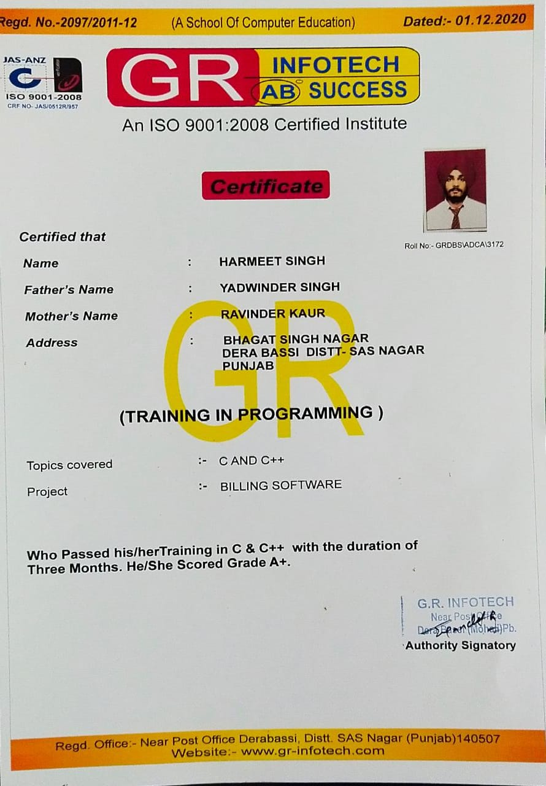
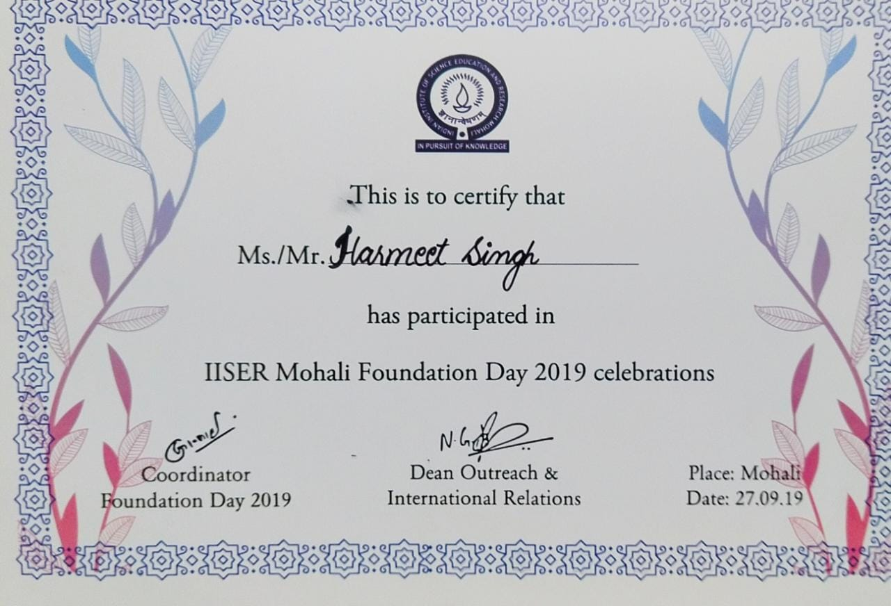
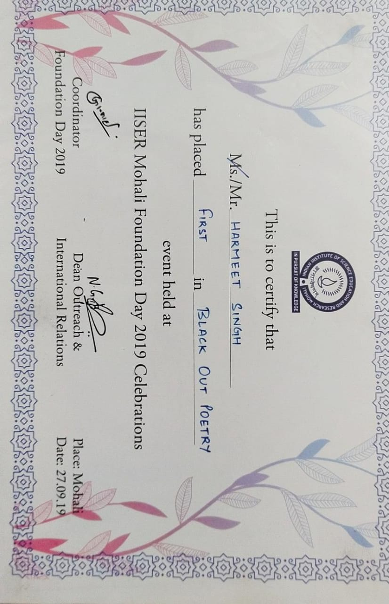
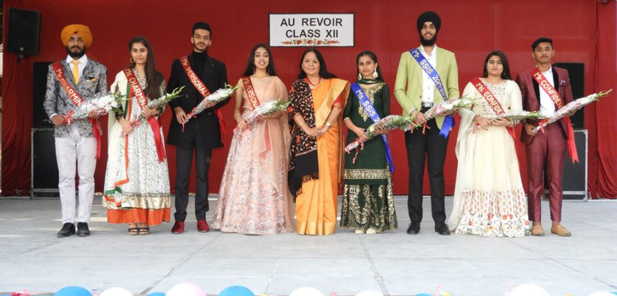
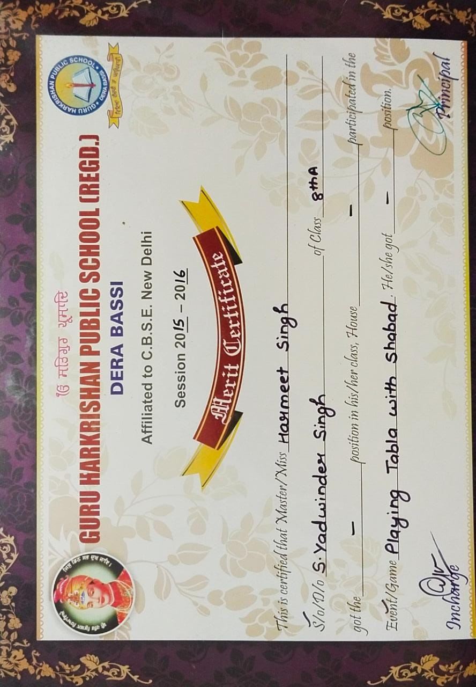
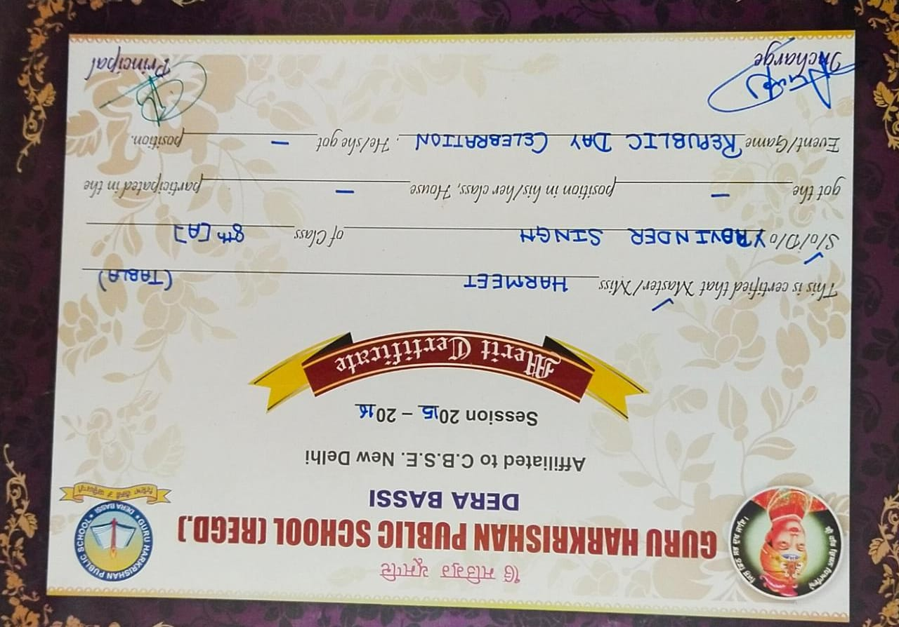
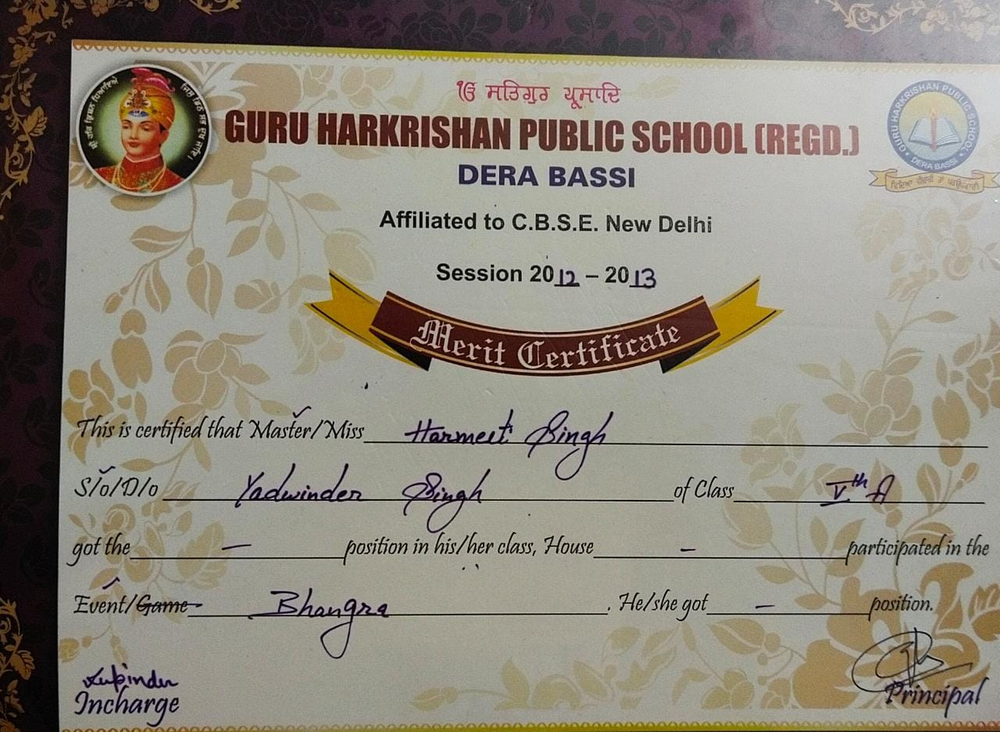
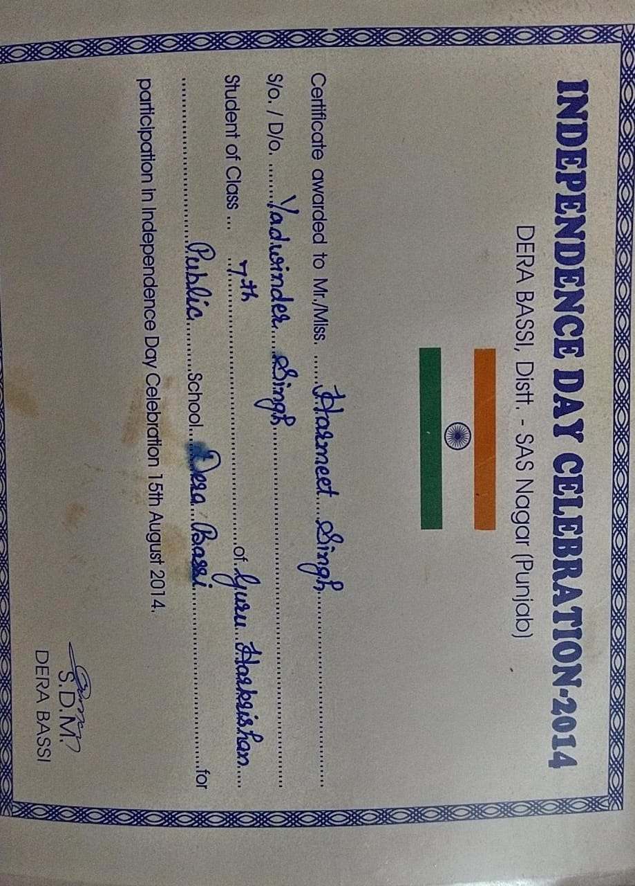
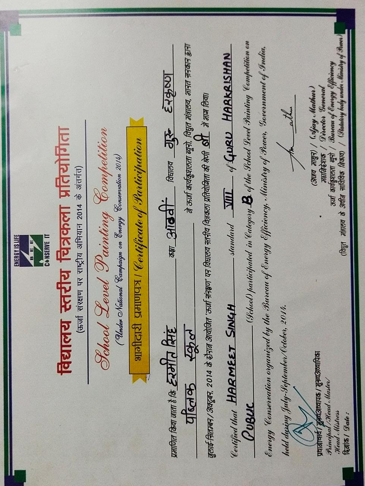
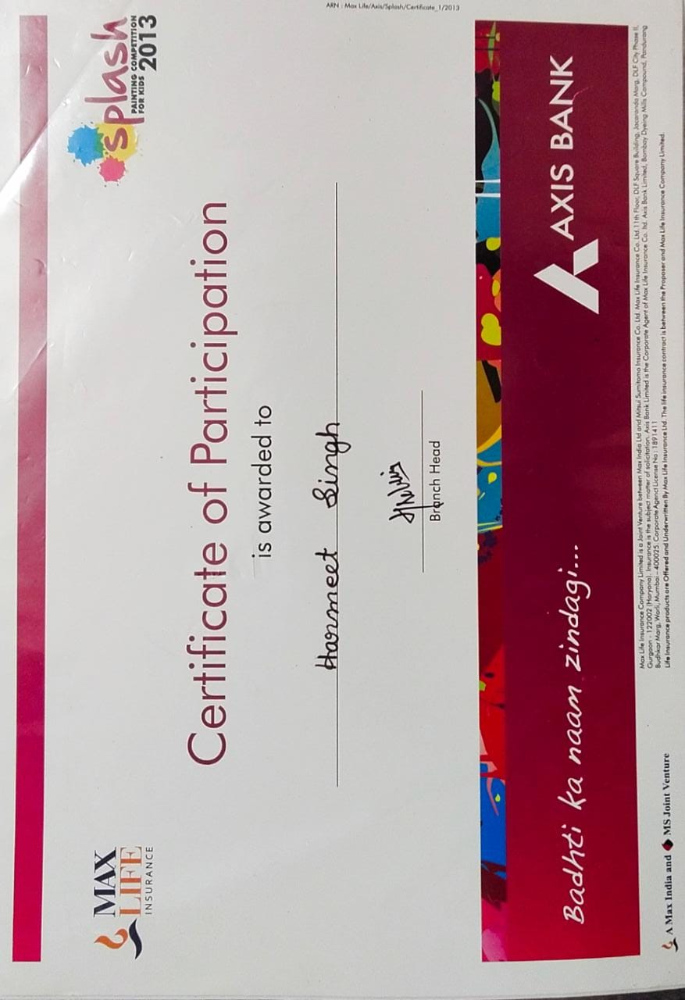

INTERESTS AND ACHIEVEMENTS
-
CODING
My interest in coding raised just after my JEE Adavnced. I took traing from a nearby institue GR INFOTECH for C and C++. I am always very excited to learn new techs of coding or web development. Also I am
a part of the TECHNOLOGY ROBOTIX SOCIETY.

POETRY
I have a great interest in creative writing. It was somewhere in 11th class when I started writing punjabi poems and
taking part in contests. Once in 12th class I went to IISER Mohali and stood 1st in black-out poetry.
 
-
SINGING
I also like singing. But only punjabi. Many a times, I used to sing in many of the school events in 10+2. Also in our 12 fairwell party I sang the song
"TAAREYA DE DES REHN WAALEYO". I was awarded with the title of MR CHARMING.

-
TABLA
Since childhood, I have a great passion for music. Besides singing I am also a Table player. I haven't take any traing for anything all that I know is self-taught.
Currently my focus is over guitar learning. From 6th class I started taking parts in competitions and shabad samaagams where I used to play tabla.
 
-
BHANGRA
When the topic comes to dancing I love BHANGRA, which is punjabi folk dance.

-
PAINTING
Also in painting I have a great interest. But now days I am damn busy in other stuffs that painting far away from me. In school days, I used to take part in various painting competitions.
  